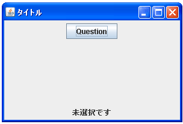
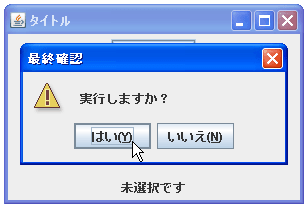
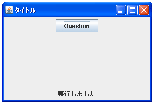

- Home ›
- Swing ›
- JOptionPaneクラス
メッセージタイプを指定して選択ダイアログを表示する
選択ダイアログでダイアログのオプションタイプとメッセージタイプを指定して選択ダイアログを表示する方法を確認します。JOptionPaneクラスで用意されている「showConfirmDialog」メソッドを使います。前頁の同名のメソッドとは引数が異なります。
showConfirmDialog
public static int showConfirmDialog(Component parentComponent,
Object message,
String title,
int optionType,
int messageType)
throws HeadlessException
optionType パラメータで選択項目数が決まるダイアログを表示します。表示す
るアイコンは messageType パラメータで決まります。Look & Feel からのデフォ
ルトアイコンを提示するには、主に messageType パラメータを使用します。
パラメータ:
parentComponent - ダイアログを表示する Frame を指定する。 null の場合、
または parentComponent が Frame を持たない場合、 デフォルトの Frame
が使用される
message - 表示する Object
title - ダイアログのタイトル文字列
optionType - ダイアログで選択可能なオプションを示す整数。YES_NO_OPTION、
YES_NO_CANCEL_OPTION、または OK_CANCEL_OPTION
messageType - 主にプラグイン可能な Look & Feel のアイコンを指定するた
めに使用されるメッセージの種類を表す整数。ERROR_MESSAGE、
INFORMATION_MESSAGE、WARNING_MESSAGE、QUESTION_MESSAGE、または
PLAIN_MESSAGE
戻り値:
ユーザーが選択したオプションを示す整数
例外:
HeadlessException - GraphicsEnvironment.isHeadless が true を返す場合
このメソッドを使うと表示されるボタンの種類とタイトルを指定できる選択ダイアログを表示できます。また引数で指定したダイアログのメッセージタイプに応じてダイアログの左側に表示されるアイコンの種類が変わります。
1番目の引数にダイアログを表示するための親フレームを指定します。例えばJFrameクラスのオブジェクトを指定して下さい。
2番目の引数にはダイアログに表示するオブジェクトを指定します。単に文字列を表示するだけであればString型の値を指定すればいいですし、JLabelクラスなどのオブジェクトを指定しても構いません。
3番目の引数にはダイアログのタイトルをString型の値で指定します。
4番目の引数にはダイアログに表示されるボタンの種類を示すint型の値を設定します。設定できる値は次の通りです。
| 値 | 実際の値 | 表示されるボタン |
|---|---|---|
| JOptionPane.YES_NO_OPTION | 0 | YES/NO |
| JOptionPane.YES_NO_CANCEL_OPTION | 1 | YES/NO/CANCEL |
| JOptionPane.OK_CANCEL_OPTION | 2 | OK/CANCEL |
5番目の引数にはダイアログのメッセージタイプを表すint型の値を指定します。指定可能な値は以下の5つです。
| 値 | ダイアログの種類 |
|---|---|
| JOptionPane.ERROR_MESSAGE | エラーメッセージ |
| JOptionPane.INFORMATION_MESSAGE | 情報メッセージ |
| JOptionPane.WARNING_MESSAGE | 警告メッセージ |
| JOptionPane.QUESTION_MESSAGE | 質問メッセージ |
| JOptionPane.PLAIN_MESSAGE | アイコン非表示 |
戻り値としてユーザーがどのボタンをクリックしたかを表すint型の値を取得できます。取得できる値は次の通りです。
| 値 | 実際の値 |
|---|---|
| JOptionPane.YES_OPTION | 0 |
| JOptionPane.NO_OPTION | 1 |
| JOptionPane.CANCEL_OPTION | 2 |
| JOptionPane.OK_OPTION | 0 |
実際の使い方は次のようになります。
JFrame frame = new JFrame(); int option = JOptionPane.showConfirmDialog(frame, "Message", "Title", JOptionPane.OK_CANCEL_OPTION, JOptionPane.ERROR_MESSAGE);
サンプルプログラム
では簡単なサンプルを作成して試してみます。
import javax.swing.*;
import java.awt.BorderLayout;
import java.awt.event.*;
public class JOptionPaneTest7 extends JFrame implements ActionListener{
JLabel ansLabel;
public static void main(String[] args){
JOptionPaneTest7 frame = new JOptionPaneTest7();
frame.setDefaultCloseOperation(JFrame.EXIT_ON_CLOSE);
frame.setBounds(10, 10, 300, 200);
frame.setTitle("タイトル");
frame.setVisible(true);
}
JOptionPaneTest7(){
JButton infoButton = new JButton("Question");
infoButton.addActionListener(this);
JPanel p = new JPanel();
p.add(infoButton);
ansLabel = new JLabel("未選択です");
JPanel ansPanel = new JPanel();
ansPanel.add(ansLabel);
getContentPane().add(p, BorderLayout.CENTER);
getContentPane().add(ansPanel, BorderLayout.PAGE_END);
}
public void actionPerformed(ActionEvent e){
int option = JOptionPane.showConfirmDialog(this, "実行しますか？",
"最終確認", JOptionPane.YES_NO_OPTION,
JOptionPane.WARNING_MESSAGE);
if (option == JOptionPane.YES_OPTION){
ansLabel.setText("実行しました");
}else if (option == JOptionPane.NO_OPTION){
ansLabel.setText("実行は中止しました");
}
}
}
上記をコンパイルした後で実行すると次のように表示されます。

ボタンをクリックすると選択ダイアログが表示されます。

選択ダイアログでクリックしたボタンに応じて画面下のラベルが書き換えられます。

今回はメッセージタイプとして「JOptionPane.WARNING_MESSAGE」を使いました。これ以外のメッセージタイプを選択した時に表示されるアイコンの種類については『タイトルとメッセージタイプを指定して警告ダイアログを表示する』を参照して下さい。
( Written by Tatsuo Ikura )

著者 / TATSUO IKURA
初心者～中級者の方を対象としたプログラミング方法や開発環境の構築の解説を行うサイトの運営を行っています。